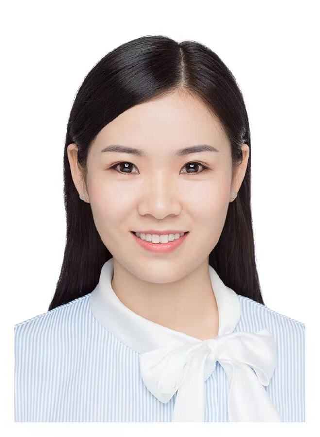

Zhiliang PengPh.D. candidateRoom 330, Academy 2 Building
|
 |
Biography
I am a Ph.D. student of LAMP in the School of Electronic, Electrical and Communication Engineering, University of Chinese Academy of Sciences , advised by Prof. Qixiang Ye. I got my B.S. degree in Peking University of Theoretical and Applied Mechanics in June 2019. I got my M.S. degree in Peking University of Computer Application Technology in June 2022.
My research interests include computer vision and representation learning.
Publications
 |
Zhaozhi Wang, Kefan Su, Jian Zhang, Huizhu Jia, Qixiang Ye, Xiaodong Xie, Zongqing Lu
Multi-Agent Automated Machine Learning Proceedings of the IEEE/CVF Conference on Computer Vision and Pattern Recognition, 2023 [Paper] |
 |
Yunjie Tian, Lingxi Xie, Zhaozhi Wang, Longhui Wei, Xiaopeng Zhang, Jianbin Jiao, Yaowei Wang, Qi Tian, Qixiang Ye
Integrally Pre-Trained Transformer Pyramid Networks Proceedings of the IEEE/CVF Conference on Computer Vision and Pattern Recognition, 2023 [Paper] [Code] |
 |
Bingyu Xu, Yaowei Wang, Zhaozhi Wang, Huizhu Jia, Zongqing Lu
Hierarchically and Cooperatively Learning Traffic Signal Control Proceedings of the AAAI Conference on Artificial Intelligence, 2021 [Paper] [Code] |
Awards
Huawei Scholarship, Peking Univiersity, 2021.
Master's Specialized Academic Scholarship, Peking University, 2021-2022.